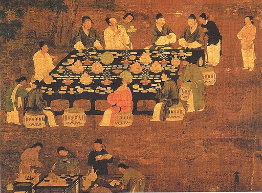

Tofu
The Untold Story

A painting showing tofu being enjoyed during the Song Dynasty in China
"A Tofu Timeline"
- 965 AD. Tofu is first mentioned in a Chinese text, Ch’ing I Lu (Anecdotes, Simple and Exotic). It was already a common and affordable food, mostly eaten by the poor.
- 1183 AD. In Japan, a Shinto priest writes about tofu in his diary. It was used as an offering at a shrine.
- 1603. The word "tofu" appears in the first Japanese-Portuguese dictionary written by Christian missionaries. It is listed as Cabe, Tofu, or Taufu.
- 1665. Spanish missionary Domingo Fernández de Navarrete describes tofu in his travel book. He explains how it is made from soy milk, shaped like cheese, and eaten boiled, fried, or smoked. He notes how widely it is consumed in China.
- 1700. James Flint responds to Benjamin Franklin’s inquiry by describing how soybeans are turned into tofu in China. He refers to them as Callivances.
- 1878. Wo Sing and Company begins making tofu in San Francisco. This is the earliest known tofu production in the United States.
- 1880. Tofu is made in France by Paillieux. This is the first recorded production in Europe, although not commercial.
- 1910. The first commercial soyfoods company in Europe is established in Paris. It is founded by Chinese scientist Li Yu-ying. He produces smoked tofu, tofu cheese, pressed sheets, and soymilk.
- 1958. Tofu is sold in a US supermarket for the first time. Boy's Market in Los Angeles sells it in plastic bags filled with water.
- 1966. Tofu is packaged in plastic trays. This packaging method is still widely used today.
- 1982. There are 242 tofu producers in the Western world. Of those, 173 are based in the United States.
- 2019. The global tofu market is valued at 2.4 billion US dollars, with steady growth driven by demand for plant-based foods.
Read more about this amazing food in this Wikipedia entry.